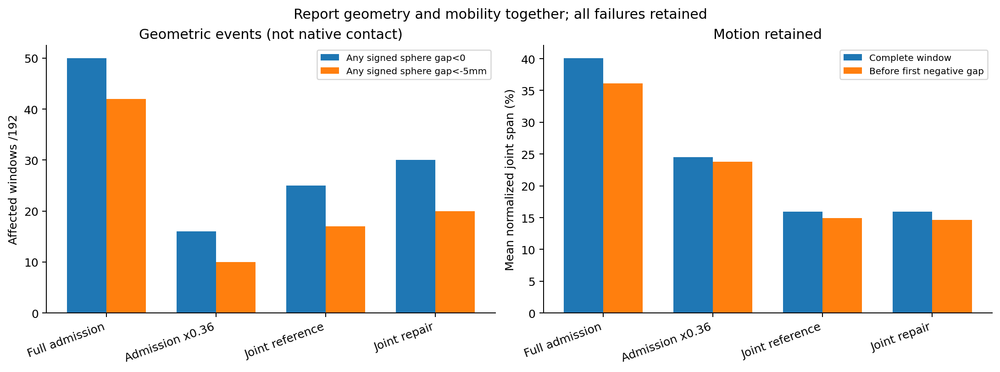
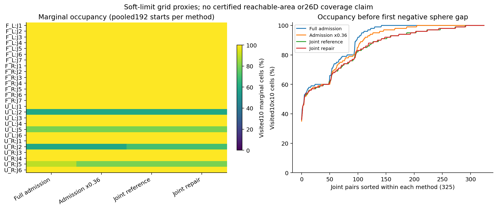
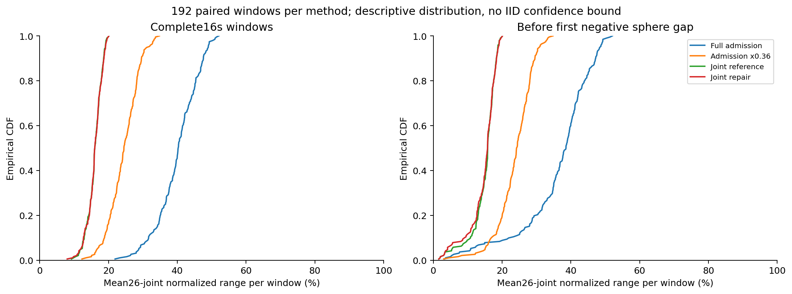
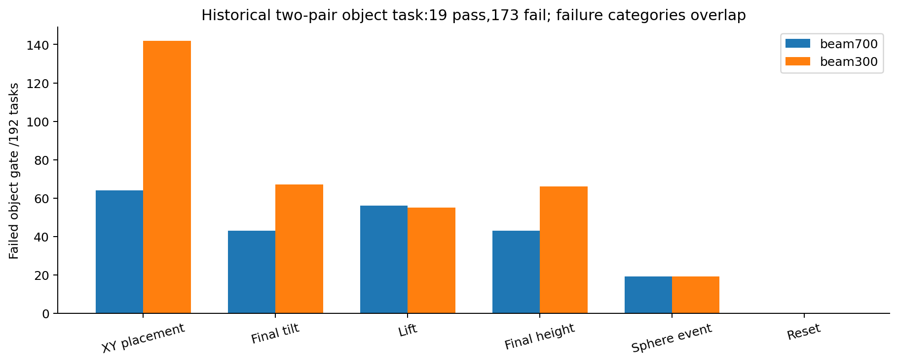

← 返回主面板SAFEDUO · RESEARCH PROTOCOL V1 · 2026-10-06
完整实验协议
与充分性审计
把安全、任务完成、运动空间、公平对照与复现性落实为可检查的证据。
当前结论：尚不足以支持全面安全声明。
本页新增的是封存数据的覆盖审计和下一阶段的实验规范。正式物理输入尚未登记，20类实验尚未按新协议执行；规范文件与软件检查通过不代表机器人安全。
768已审计旧方法窗口
325全部关节对
20计划实验类别
0新协议物理窗口
已有证据说明了什么
原封存实验包含192个初态、四种配置，每个窗口16秒。审计沿用原始有符号球体间距：d < 0为几何事件，d < −5mm为较深事件。这不是原生网格接触或硬件伤害判据。
| 配置 / 每组192 | 负间距窗口 | 低于−5mm | 平均关节跨度 | 首次负间距前跨度 | 关节对访问率 | 最弱关节对 |
|---|
跨度先按各关节软目标范围归一化，再取26关节平均；未裁掉越软范围的实际运动。关节对访问率是在每对10×10软范围矩形中的已访问格比例，再取325对平均。分母尚未经可达性验证，不能换算成26维空间覆盖或安全体积。

同时保留几何事件和运动能力；幅值缩减不是公平的安全改善证明。PDF · SVG
四种配置中均记录了软目标范围外的实际观测，详见审计JSON。这些范围是控制目标软界限，尚不能把越界直接称为硬件限位失败。四臂活动判据为压力期每臂关节速度RMS>0.01rad/s；它也不是四臂合作任务成功。
随机范围：初态、全程与非负前缀分开看
大量初态汇总后的格点访问率，与单条轨迹实际走过的范围是不同问题。这里补算初态贡献；“非负前缀”保留初态及首次负间距之前的状态，不包含首次失败状态或其后运动。
| 配置 | 初态格点访问率 | 全程访问率 | 非负前缀访问率 | 前缀新增格点 / 100 | 四臂同时活动 |
|---|
初态 / 192个
全部状态 / 含失败之后
首次负间距前
颜色显示访问次数的log(1+count)，各图使用同一色标；未访问格为灰色。灰格还不能区分不可达与未测试。横纵坐标为归一化软范围的10格。

72个同臂关节对 + 253个跨臂关节对，完整325对；二维指标仍不能证明全维覆盖。PDF · SVG

描述性分布，不附假设各物理帧独立的置信区间。PDF · SVG
保留之前的真实物体实验
旧任务是两根物体的双对搬运；10个扰动维度中，每物体位置仅±2cm、偏航±8°，质量倍数0.8–1.2、摩擦倍数0.6–1.4。141个LHS设计样本、48个角点和3个重复名义场景，不是纯IID，也不是广域操作空间测试。

从封存案例表复算，和旧计数完全一致；失败类别可重叠。没有重跑全部原始物理记录。PDF · 全部192个案例与扰动参数旧实验已经记录手指—物体与物体—桌面的过滤接触，不能说项目“完全没有接触证据”。但其测量状态是FAIL_UNCALIBRATED，尚不满足新的全场景独立危险判据。旧夹持试验的5cm抬升等准则也保留原口径；本协议另设10cm抬升、保持2秒、释放后重力响应的校准子任务，这是工程验收选择。
现有接触辅助固定关节夹持明确属于约束辅助，不能写成纯摩擦夹持。任务成败、物体的真实动态状态、夹持类型和原生接触归因需要一起报告。
完整实验矩阵：设计已落地，执行尚未完成
六类随机运动、八类物体任务、六类鲁棒性实验；每类再分布局、难度、臂组合与场景因素。共享载荷、交接和合作装配的成功需要任务依赖，不能用四臂同时输出随机动作代替。
五类对照：原任务策略、仅限速、原安全回退、System0参考、冻结候选。保留消融和零指令诊断；动作范围与路径须匹配，匹配系数只在开发集确定。正式输入尚未登记，当前结果不得事后改名为新协议最终测试。
下载机器可读矩阵
进入最终实验前的证据门槛
G0 · 测量与任务有效性
校准独立网格/PhysX危险判据；核对物体位置、尺寸与时间戳进入实际策略张量；验证可抓布局、真实夹持和释放、成功判据负对照；相机绑定同一次数值执行。
G1 · 可达操作空间
先建立FK/IK验证的可达参考库，再报告各臂位置、姿态、速度、全部六臂对、26关节与325关节对。空格分别标注不可达、未测与未知。
G2/G3 · 随机与合作任务
纯IID、持续动作、平滑相关、广域初态、同步交叉和边界流；单臂抓放、六对交接与共抬、三种双对搬运、四臂共享载荷和装配均有明确任务成功判据。
G4 · 公平对照与鲁棒性
同时报告风险、安全任务成功率、活动范围、路径、死锁和延迟。传感误差、FIFO延迟、载荷、物理参数、未见布局及长时执行单列，主效应不冒充全部交互覆盖。
准入检查只判断声明的证据字段是否齐全；仍需逐项读回源文件、运行测量负对照和校验SHA。尚未登记PASS凭证不等于旧机制不存在。
统计与复现：样本量不是越多越好
布局、初态、物体、种子按组划分开发、验证、最终测试；最终候选、输入、阈值和分析代码都先冻结。一个完整窗口是一个观测单位，960帧或9021条几何约束不算960或9021个独立试验。配对方法、重复名义场景与同种子组的依赖也要保留。
每个主要随机族至少20个独立种子组、每组64例是设计底线；最终数量仍须根据开发数据的效应大小、组内相关与目标精度计算，并在最终输入登记前确定。分层与最差场景结果单列，不靠总平均掩盖风险。
仅作为独立同分布、零失败试验的样本量示例：192次全无失败时，单侧95%失效率上界仍约1.55%；要把上界压到0.1%，需至少2995次独立零失败试验。这不是当前相关、分层且存在失败的数据的可靠性区间。NIST精确二项方法
复现分逐位、容差与统计三个层次，固定软件、模型、资产、硬件、配置、随机输入与真实执行FIFO。已有独立相机重放的逐位轨迹比较失败，不能据其图像认定原数值轨迹在同一时刻的物理接触。
组织方式参考NIST机器人性能评测框架；ISO10218的公开范围仅用于界定机器人与系统集成安全边界，本工作未完成条款符合性评价。
本轮完成项与下一执行顺序
已完成封存文件读回、768窗口原端点复算、全部325关节对与非负前缀审计、初态贡献补算、旧物体证据范围核对、20类机器可读矩阵和软件检查。所有旧失败保留。
正在运行的已登记预测实验保持其原协议：先收尾并检查大误差与新增失败；随后优先补G0接触校准、夹持/任务测量与输入绑定，再建可达参考库并执行矩阵。新增同类随机窗口不能替代这些门槛。
本页的“充分性”与未来最终验收状态单列；发布通过和研究证据验收是不同结论。